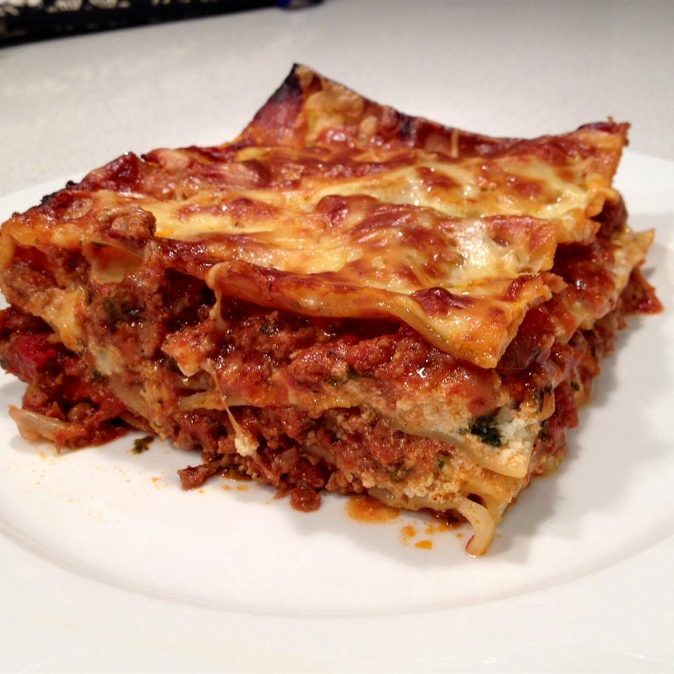

Lasagna

After years of tweaking this recipe, I've finally got it to where I want
it. Everyone raves about this lasagna just the way it is, although I'll
probably never stop tweaking it!
Ingredients
- 1 pound bulk Italian sausage
- 1 pound ground beef
- 1 cup chopped onion
- 4 cloves garlic, minced
- 2 (8 ounce) cans tomato sauce
- 1 (14 ounce) can crushed tomatoes
- 1 (14 ounce) can Italian-style crushed tomatoes
- 2 (6 ounce) cans tomato paste
- 3 tablespoons chopped fresh basil
- 2 tablespoons chopped fresh parsley
- 2 teaspoons brown sugar
- 1 teaspoon salt
- 1 teaspoon Italian seasoning
- ¼ teaspoon ground black pepper
- ½ teaspoon fennel seeds (Optional)
- ½ cup grated Parmesan cheese
- 12 lasagna noodles
- 1 egg
- 1 (15 ounce) container ricotta cheese
- 2 tablespoons chopped fresh parsley
- ½ teaspoon salt
- 1 pinch ground nutmeg
- 1 (16 ounce) package shredded mozzarella cheese, divided
- ¾ cup grated Parmesan cheese, divided
Steps
-
Brown sausage and ground beef with onion and garlic in a large Dutch
oven or heavy pot over medium heat, cooking and stirring until meat is
cooked through, 10 to 15 minutes. Drain and discard grease. Stir tomato
sauce, crushed tomatoes, Italian-style crushed tomatoes, tomato paste,
basil, 2 tablespoons parsley, brown sugar, salt, Italian seasoning,
black pepper, fennel seeds, and 1/2 cup Parmesan cheese into meat
mixture. Bring to a boil, reduce heat to low, and simmer sauce for at
least 1 hour (up to 6 for best flavor). Stir occasionally.
-
Place lasagna noodles into a deep bowl and cover with very hot tap
water; let soak for 30 minutes.
-
Beat egg in a bowl and stir ricotta cheese, 2 tablespoons parsley, 1/2
teaspoon salt, and nutmeg into egg until thoroughly combined.
- Preheat oven to 375 degrees F (190 degrees C).
-
Cover bottom of a 9x13-inch baking dish with 1 cup sauce. Layer 4 soaked
lasagna noodles, 1/3 of the ricotta cheese mixture, 1/3 of the shredded
mozzarella cheese, and 1/4 cup Parmesan cheese in the dish. Repeat
layers twice more, ending with mozzarella and Parmesan cheeses. Cover
dish with aluminum foil.
-
Bake until lasagna noodles are tender and casserole is bubbling, about
50 minutes. Remove foil and bake until cheese topping is lightly
browned, 15 to 20 more minutes. Let stand 15 minutes before serving.
Return to main page.